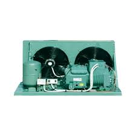

In commercial and industrial refrigeration, condensing units are often exposed directly to severe ambient heat. This increases heat rejection difficulty and requires stricter maintenance discipline.
A neglected unit consumes more power and accelerates compressor wear. A clean, monitored unit keeps performance close to design conditions, even in peak summer.
Symptoms of Condensing Unit Degradation
The following signs indicate immediate inspection is needed:
1. High Head Pressure
One of the most common warning signs. If R404A condensing pressure exceeds 26 bar in hot conditions, coil fouling and airflow restriction are likely root causes.
2. High Discharge Temperature
Elevated head pressure increases compression ratio and discharge temperature. Persistent high discharge values indicate a near-term reliability risk.
3. Abnormal Condenser Fan Electrical Behavior
Bent blades or worn bearings reduce airflow across the condenser and immediately increase condensing pressure.
4. Excessive Unit Vibration
Usually linked to blade imbalance or bearing damage. This accelerates mechanical degradation and can trigger secondary failures.
Condenser Cleaning: Correct Method
Coil cleaning is one of the highest-ROI refrigeration maintenance actions when done correctly.
Required Materials and Tools
Neutral pH coil cleaner, low-pressure rinse water, and basic PPE. Avoid aggressive pressure that can deform fins and permanently reduce performance.
Systematic Cleaning Steps
Isolate power, apply cleaner, allow dwell time, rinse opposite normal airflow direction, and verify fin condition before restart.
Airflow Management: High Impact, Often Ignored
Installation geometry around condensing units can materially affect performance:
Routine Maintenance Schedule - Condensing Unit
| Task | Frequency | Priority |
|---|---|---|
| Record condensing pressure against baseline values | Weekly | Critical |
| Check condenser fan operation and electrical current | Weekly | Critical |
| Clean condenser fins | Monthly (increase in summer) | Critical |
| Check belt tension if belt-driven | Monthly | Important |
| Lubricate fan bearings | Every 3 months | Important |
| Inspect electrical terminals and wiring trays | Every 6 months | Important |
| Measure fan motor insulation resistance | Annually | Routine |
Condenser Fans: Maintenance That Cannot Wait
A failed condenser fan can effectively remove the unit from service. Confirm the following items during maintenance rounds:
-
Measure and log fan current. A rising value may indicate bearing degradation.
-
Clean fan blades monthly to maintain airflow and balance.
-
Verify blade balance; vibration usually indicates imbalance or blade damage.
-
In multi-fan systems, verify all fans rotate in the correct direction.
-
Keep critical fan spares available for summer downtime risk reduction.
Need a Condensing Unit Maintenance Plan?
Elfarida Ice provides structured service contracts with documented periodic reports.
Get a Quote